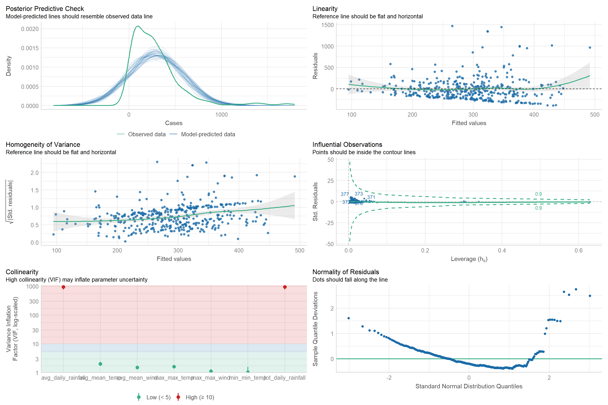
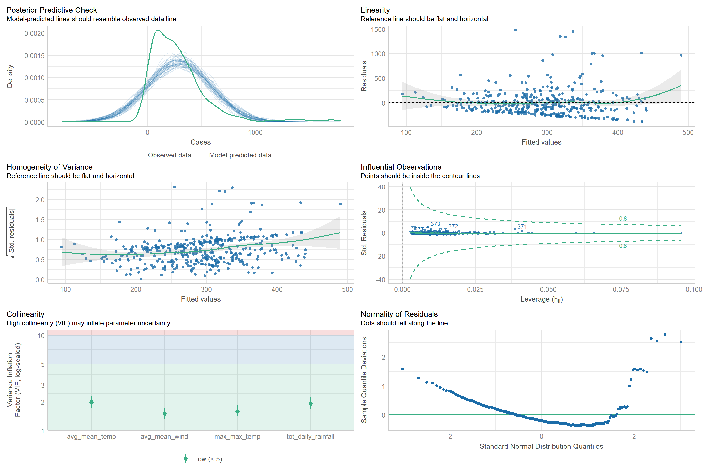
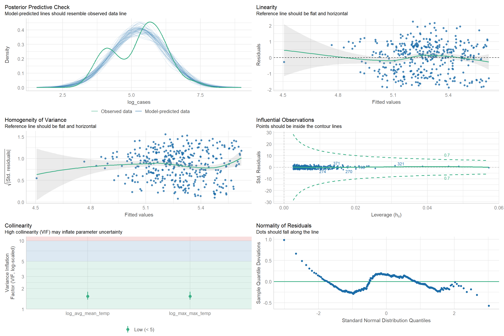
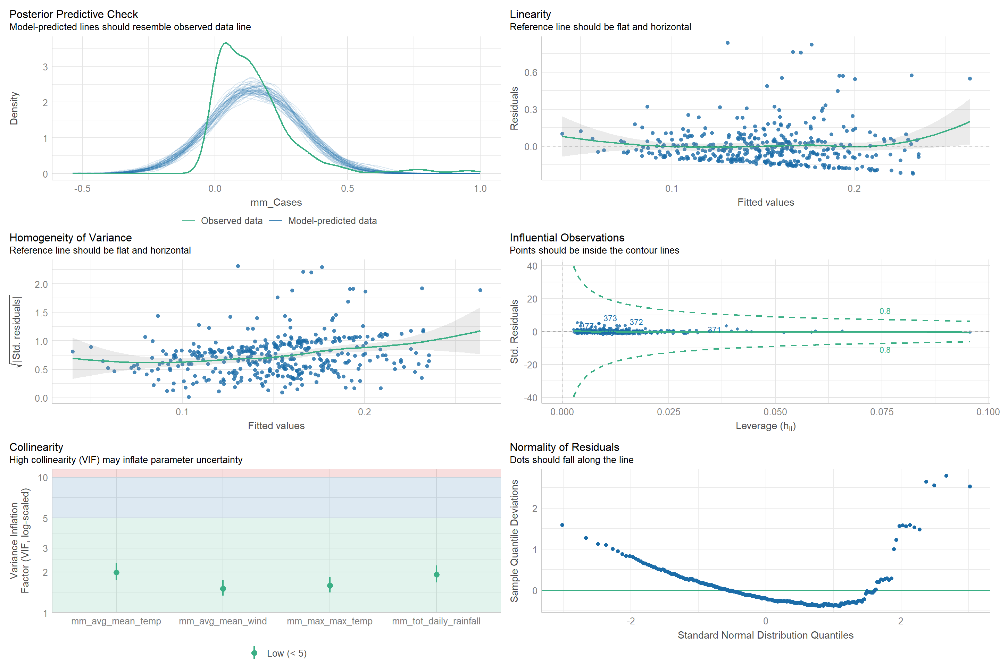
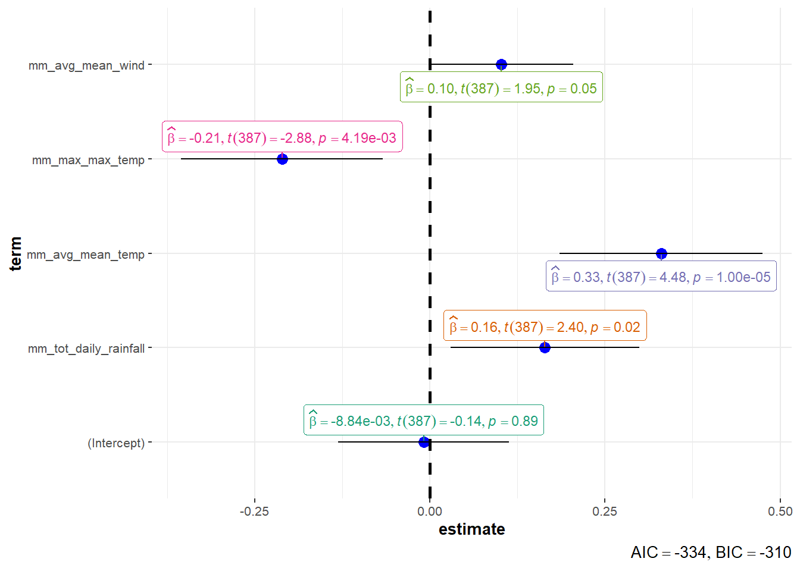

pacman::p_load(tidyverse, lubridate, caret, performance, ggstatsplot)Prototyping Modules for Visual Analytics Shiny Application
1. Setting the Scene
1.1 Background
This is the take home exercise 4 of ISSS608 Visual Analytics and Applications. In this exercise, we are instructed to develop the prototype for our group Shiny app. Each member of our team needs to pick a module in our Shiny app, and work out the prototype for that module.
Our team chose the topic to study the climate impact in Singapore using the weather data downloaded from Meteorological Service Singapore website and the weekly dengue cases from SGCharts: Outbreak.
The module I have chosen for this take home exercise is to develop an explanatory model to test the impact of the weather data (i.e., temperature, rainfall and wind) on the occurrence of dengue cases in Singapore.
For the interest of this project, we are going to explore the data on a weekly basis at the national level.
2. Understanding the Data
2.1 Installing and loading the required libraries
2.2 Importing the data
2.2.1 Weather data
weather <- read_csv("../../Data/clean_climate_data.csv", na = ".")
head(weather, n=10)# A tibble: 10 × 13
Station Year Month Day daily_rainfall highest_30m_rainfall
<chr> <dbl> <dbl> <dbl> <dbl> <dbl>
1 Paya Lebar 2003 1 1 31 NA
2 Paya Lebar 2003 1 2 28 NA
3 Paya Lebar 2003 1 3 1.8 NA
4 Paya Lebar 2003 1 4 3.3 NA
5 Paya Lebar 2003 1 5 9.3 NA
6 Paya Lebar 2003 1 6 0.5 NA
7 Paya Lebar 2003 1 7 19.2 NA
8 Paya Lebar 2003 1 8 26 NA
9 Paya Lebar 2003 1 9 0 NA
10 Paya Lebar 2003 1 10 0 NA
# ℹ 7 more variables: highest_60m_rainfall <dbl>, highest_120m_rainfall <dbl>,
# mean_temp <dbl>, max_temp <dbl>, min_temp <dbl>, mean_wind <dbl>,
# max_wind <dbl>2.2.2 Dengue data
dengue <- read_csv("../../Data/weekly_dengue_cases.csv")
head(dengue, n=10)# A tibble: 10 × 3
Year WkNo Cases
<dbl> <dbl> <dbl>
1 2013 20 611
2 2013 21 640
3 2013 22 746
4 2013 23 814
5 2013 24 810
6 2013 25 853
7 2013 26 806
8 2013 27 678
9 2013 28 541
10 2013 29 3912.3 Preparing the data
2.3.1 Weather Data
The weather data downloaded from Meteorological Service Singapore website contains the weather information at each weather station. Hence, we use the code chunk below to aggregate the data at national level
- avg_daily_rainfall: average daily rainfall among all stations
- max_highest_30m_rainfall: maximum highest 30m rainfall among all stations
- max_highest_60m_rainfall: maximum highest 60m rainfall among all stations
- max_highest_120m_rainfall: maximum highest 120m rainfall among all stations
- avg_mean_temp: average temperature among all stations
- max_max_temp: maximum of highest temperature among all stations
- min_min_temp: minimum of lowest temperature among all stations
- avg_mean_wind: average wind among all stations
- max_max_wind: maximum of maximum wind among all stations
weather_group <- weather %>%
group_by(Year, Month, Day) %>%
summarise(avg_daily_rainfall = mean(daily_rainfall, na.rm = TRUE),
max_highest_30m_rainfall = max(highest_30m_rainfall, na.rm = TRUE),
max_highest_60m_rainfall = max(highest_60m_rainfall, na.rm = TRUE),
max_highest_120m_rainfall = max(highest_120m_rainfall, na.rm = TRUE),
avg_mean_temp = mean(mean_temp, na.rm = TRUE),
max_max_temp = max(max_temp, na.rm = TRUE),
min_min_temp = min(min_temp, na.rm = TRUE),
avg_mean_wind = mean(mean_wind, na.rm = TRUE),
max_max_wind = max(max_wind, na.rm = TRUE)) %>%
ungroup()
summary(weather_group) Year Month Day avg_daily_rainfall
Min. :2003 Min. : 1.000 Min. : 1.00 Min. : 0.00000
1st Qu.:2008 1st Qu.: 4.000 1st Qu.: 8.00 1st Qu.: 0.06667
Median :2013 Median : 7.000 Median :16.00 Median : 2.26056
Mean :2013 Mean : 6.523 Mean :15.73 Mean : 6.90035
3rd Qu.:2018 3rd Qu.:10.000 3rd Qu.:23.00 3rd Qu.: 9.38194
Max. :2023 Max. :12.000 Max. :31.00 Max. :198.02500
max_highest_30m_rainfall max_highest_60m_rainfall max_highest_120m_rainfall
Min. :-Inf Min. : -Inf Min. : -Inf
1st Qu.:-Inf 1st Qu.: -Inf 1st Qu.: -Inf
Median :-Inf Median : -Inf Median : -Inf
Mean :-Inf Mean : -Inf Mean : -Inf
3rd Qu.: 9.2 3rd Qu.: 10.2 3rd Qu.: 10.8
Max. :67.0 Max. :102.6 Max. :124.4
avg_mean_temp max_max_temp min_min_temp avg_mean_wind
Min. :22.94 Min. :24.30 Min. : 0.00 Min. : 2.800
1st Qu.:27.02 1st Qu.:32.10 1st Qu.:22.90 1st Qu.: 6.506
Median :27.80 Median :33.20 Median :23.50 Median : 7.656
Mean :27.76 Mean :32.89 Mean :23.56 Mean : 8.130
3rd Qu.:28.59 3rd Qu.:34.00 3rd Qu.:24.20 3rd Qu.: 9.300
Max. :30.65 Max. :38.00 Max. :27.50 Max. :21.900
max_max_wind
Min. : 9.40
1st Qu.: 33.30
Median : 41.00
Mean : 42.88
3rd Qu.: 49.70
Max. :138.60 Two new columns need to be created before we can aggregate the data at week level:
- date: a date variable created from Year, Month and Day columns
- wk_no: calculate the week number using the date column
weather_group <- weather_group %>%
mutate('date' = make_date(year = Year, month = Month, day = Day)) %>%
mutate('wk_no' = isoweek(ymd(date)))We can now aggregate the data by week:
- avg_daily_rainfall: average rainfall in a week. For some reasons, average and sum can’t be calculated under one group_by() command. Hence, the calculation of average rainfall and total rainfall have been divided in two steps.
- tot_daily_rainfall: total rainfall in a week
- max_highest_30m_rainfall: maximum highest 30m rainfall in a week
- max_highest_60m_rainfall: maximum highest 60m rainfall in a week
- max_highest_120m_rainfall: maximum highest 120m rainfall in a week
- avg_mean_temp: average temperature in a week
- max_max_temp: maximum of highest daily temperature in a week
- min_min_temp: minimum of lowest daily temperature in a week
- avg_mean_wind: average wind in a week
- max_max_wind: maximum of maximum daily wind in a week
weather_group_wk <- weather_group %>%
group_by(Year, wk_no) %>%
summarise(tot_daily_rainfall = sum(avg_daily_rainfall),
max_highest_30m_rainfall = max(max_highest_30m_rainfall),
max_highest_60m_rainfall = max(max_highest_60m_rainfall),
max_highest_120m_rainfall = max(max_highest_120m_rainfall),
avg_mean_temp = mean(avg_mean_temp),
max_max_temp = max(max_max_temp),
min_min_temp = min(min_min_temp),
avg_mean_wind = mean(avg_mean_wind),
max_max_wind = max(max_max_wind)) %>%
ungroup()
weather_group_wk <- weather_group %>%
group_by(Year, wk_no) %>%
summarise(avg_daily_rainfall = mean(avg_daily_rainfall)) %>%
left_join(weather_group_wk, by = join_by(Year, wk_no)) %>%
ungroup()
summary(weather_group_wk) Year wk_no avg_daily_rainfall tot_daily_rainfall
Min. :2003 Min. : 1.00 Min. : 0.000 Min. : 0.00
1st Qu.:2008 1st Qu.:14.00 1st Qu.: 3.041 1st Qu.: 21.36
Median :2013 Median :27.00 Median : 5.923 Median : 41.39
Mean :2013 Mean :26.69 Mean : 6.947 Mean : 48.11
3rd Qu.:2018 3rd Qu.:40.00 3rd Qu.: 9.462 3rd Qu.: 66.16
Max. :2023 Max. :53.00 Max. :71.681 Max. :372.31
max_highest_30m_rainfall max_highest_60m_rainfall max_highest_120m_rainfall
Min. :-Inf Min. : -Inf Min. : -Inf
1st Qu.:-Inf 1st Qu.: -Inf 1st Qu.: -Inf
Median :-Inf Median : -Inf Median : -Inf
Mean :-Inf Mean : -Inf Mean : -Inf
3rd Qu.:34.2 3rd Qu.: 44.4 3rd Qu.: 49.25
Max. :67.0 Max. :102.6 Max. :124.40
avg_mean_temp max_max_temp min_min_temp avg_mean_wind
Min. :23.85 Min. :28.00 Min. : 0.00 Min. : 4.668
1st Qu.:27.18 1st Qu.:33.70 1st Qu.:22.10 1st Qu.: 6.766
Median :27.78 Median :34.30 Median :22.50 Median : 7.787
Mean :27.76 Mean :34.31 Mean :22.46 Mean : 8.135
3rd Qu.:28.36 3rd Qu.:35.00 3rd Qu.:23.00 3rd Qu.: 9.017
Max. :30.16 Max. :38.00 Max. :24.80 Max. :19.214
max_max_wind
Min. : 23.4
1st Qu.: 45.0
Median : 56.5
Mean : 58.4
3rd Qu.: 68.3
Max. :138.6 We can save the weekly weather data in csv file format for future reference.
write_csv(weather_group_wk, "../../Data/clean_climate_data_by_week.csv")2.3.2 Join Dengue Data with Weekly Weather Data
As there are more records in weather data, we will perform a left join using dengue data.
dengue_weather_wk <- dengue %>%
left_join(weather_group_wk, by = join_by(Year == Year, WkNo == wk_no))
summary(dengue_weather_wk) Year WkNo Cases avg_daily_rainfall
Min. :2013 Min. : 1.00 Min. : 24.0 Min. : 0.000
1st Qu.:2015 1st Qu.:15.00 1st Qu.: 78.0 1st Qu.: 2.720
Median :2017 Median :27.50 Median : 229.5 Median : 5.148
Mean :2017 Mean :27.13 Mean : 291.7 Mean : 5.976
3rd Qu.:2019 3rd Qu.:40.00 3rd Qu.: 379.5 3rd Qu.: 8.486
Max. :2020 Max. :53.00 Max. :1792.0 Max. :27.621
NA's :2
tot_daily_rainfall max_highest_30m_rainfall max_highest_60m_rainfall
Min. : 0.00 Min. : -Inf Min. : -Inf
1st Qu.: 19.04 1st Qu.:20.55 1st Qu.: 24.15
Median : 36.03 Median :32.40 Median : 41.60
Mean : 41.91 Mean : -Inf Mean : -Inf
3rd Qu.: 59.40 3rd Qu.:40.00 3rd Qu.: 55.85
Max. :193.35 Max. :65.20 Max. :102.60
NA's :2 NA's :2 NA's :2
max_highest_120m_rainfall avg_mean_temp max_max_temp min_min_temp
Min. : -Inf Min. :24.56 Min. :31.0 Min. : 0.00
1st Qu.: 26.2 1st Qu.:27.53 1st Qu.:34.1 1st Qu.:22.10
Median : 46.4 Median :28.09 Median :34.7 Median :22.60
Mean : -Inf Mean :28.07 Mean :34.6 Mean :22.41
3rd Qu.: 64.0 3rd Qu.:28.68 3rd Qu.:35.2 3rd Qu.:23.10
Max. :122.8 Max. :30.09 Max. :37.5 Max. :24.80
NA's :2 NA's :2 NA's :2 NA's :2
avg_mean_wind max_max_wind
Min. : 5.442 Min. : 35.30
1st Qu.: 7.070 1st Qu.: 55.40
Median : 8.057 Median : 63.40
Mean : 8.348 Mean : 66.63
3rd Qu.: 9.255 3rd Qu.: 73.17
Max. :14.846 Max. :138.60
NA's :2 NA's :2 Remove the rows with no weather data.
dengue_weather_wk <- dengue_weather_wk[complete.cases(dengue_weather_wk),]
summary(dengue_weather_wk) Year WkNo Cases avg_daily_rainfall
Min. :2013 Min. : 1.00 Min. : 24.00 Min. : 0.000
1st Qu.:2015 1st Qu.:14.75 1st Qu.: 77.75 1st Qu.: 2.720
Median :2017 Median :27.00 Median : 229.50 Median : 5.148
Mean :2017 Mean :27.00 Mean : 291.68 Mean : 5.976
3rd Qu.:2019 3rd Qu.:40.00 3rd Qu.: 378.50 3rd Qu.: 8.486
Max. :2020 Max. :52.00 Max. :1792.00 Max. :27.621
tot_daily_rainfall max_highest_30m_rainfall max_highest_60m_rainfall
Min. : 0.00 Min. : -Inf Min. : -Inf
1st Qu.: 19.04 1st Qu.:20.55 1st Qu.: 24.15
Median : 36.03 Median :32.40 Median : 41.60
Mean : 41.91 Mean : -Inf Mean : -Inf
3rd Qu.: 59.40 3rd Qu.:40.00 3rd Qu.: 55.85
Max. :193.35 Max. :65.20 Max. :102.60
max_highest_120m_rainfall avg_mean_temp max_max_temp min_min_temp
Min. : -Inf Min. :24.56 Min. :31.0 Min. : 0.00
1st Qu.: 26.2 1st Qu.:27.53 1st Qu.:34.1 1st Qu.:22.10
Median : 46.4 Median :28.09 Median :34.7 Median :22.60
Mean : -Inf Mean :28.07 Mean :34.6 Mean :22.41
3rd Qu.: 64.0 3rd Qu.:28.68 3rd Qu.:35.2 3rd Qu.:23.10
Max. :122.8 Max. :30.09 Max. :37.5 Max. :24.80
avg_mean_wind max_max_wind
Min. : 5.442 Min. : 35.30
1st Qu.: 7.070 1st Qu.: 55.40
Median : 8.057 Median : 63.40
Mean : 8.348 Mean : 66.63
3rd Qu.: 9.255 3rd Qu.: 73.17
Max. :14.846 Max. :138.60 We can save the joined data in csv file format for future reference.
write_csv(dengue_weather_wk, "../../Data/dengue_climate_joined_by_week.csv")2.3.3 Data Transformation
We’ll then perform the following transformations and add the corresponding transformed columns in the dataset:
- log transformation: log1p() is used instead of log() is to deal with rows having value of 0
- standardization
dengue_weather_wk_tf <- dengue_weather_wk %>%
mutate(log_cases = log1p(Cases),
log_avg_daily_rainfall = log1p(avg_daily_rainfall),
log_tot_daily_rainfall = log1p(tot_daily_rainfall),
log_max_highest_30m_rainfall = log1p(max_highest_30m_rainfall),
log_max_highest_60m_rainfall = log1p(max_highest_60m_rainfall),
log_max_highest_120m_rainfall = log1p(max_highest_120m_rainfall),
log_avg_mean_temp = log1p(avg_mean_temp),
log_max_max_temp = log1p(max_max_temp),
log_min_min_temp = log1p(min_min_temp),
log_avg_mean_wind = log1p(avg_mean_wind),
log_max_max_wind = log1p(max_max_wind),
z_cases = scale(Cases),
z_avg_daily_rainfall = scale(avg_daily_rainfall),
z_tot_daily_rainfall = scale(tot_daily_rainfall),
z_avg_mean_temp = scale(avg_mean_temp),
z_max_max_temp = scale(max_max_temp),
z_min_min_temp = scale(min_min_temp),
z_avg_mean_wind = scale(avg_mean_wind),
z_max_max_wind = scale(max_max_wind))Next we use the preprocess() function from caret package to perform min-max transformation on the data.
minmax_data <- dengue_weather_wk %>%
select(-c("max_highest_30m_rainfall", "max_highest_60m_rainfall", "max_highest_120m_rainfall"))
#minmax_preprocess <- preProcess(minmax_data, method = c("range"))
minmax_preprocess <- preProcess(minmax_data, method = list(range = names(minmax_data)[3:10]))
minmax_result <- predict(minmax_preprocess, minmax_data)
colnames(minmax_result) <- c("Year",
"WkNo",
"mm_Cases",
"mm_avg_daily_rainfall",
"mm_tot_daily_rainfall",
"mm_avg_mean_temp",
"mm_max_max_temp",
"mm_min_min_temp",
"mm_avg_mean_wind",
"mm_max_max_wind")We then add the min-max transformed columns to the main dataset.
dengue_weather_wk_tf <- dengue_weather_wk_tf %>%
left_join(minmax_result, by = join_by(Year, WkNo))
summary(dengue_weather_wk_tf) Year WkNo Cases avg_daily_rainfall
Min. :2013 Min. : 1.00 Min. : 24.00 Min. : 0.000
1st Qu.:2015 1st Qu.:14.75 1st Qu.: 77.75 1st Qu.: 2.720
Median :2017 Median :27.00 Median : 229.50 Median : 5.148
Mean :2017 Mean :27.00 Mean : 291.68 Mean : 5.976
3rd Qu.:2019 3rd Qu.:40.00 3rd Qu.: 378.50 3rd Qu.: 8.486
Max. :2020 Max. :52.00 Max. :1792.00 Max. :27.621
tot_daily_rainfall max_highest_30m_rainfall max_highest_60m_rainfall
Min. : 0.00 Min. : -Inf Min. : -Inf
1st Qu.: 19.04 1st Qu.:20.55 1st Qu.: 24.15
Median : 36.03 Median :32.40 Median : 41.60
Mean : 41.91 Mean : -Inf Mean : -Inf
3rd Qu.: 59.40 3rd Qu.:40.00 3rd Qu.: 55.85
Max. :193.35 Max. :65.20 Max. :102.60
max_highest_120m_rainfall avg_mean_temp max_max_temp min_min_temp
Min. : -Inf Min. :24.56 Min. :31.0 Min. : 0.00
1st Qu.: 26.2 1st Qu.:27.53 1st Qu.:34.1 1st Qu.:22.10
Median : 46.4 Median :28.09 Median :34.7 Median :22.60
Mean : -Inf Mean :28.07 Mean :34.6 Mean :22.41
3rd Qu.: 64.0 3rd Qu.:28.68 3rd Qu.:35.2 3rd Qu.:23.10
Max. :122.8 Max. :30.09 Max. :37.5 Max. :24.80
avg_mean_wind max_max_wind log_cases log_avg_daily_rainfall
Min. : 5.442 Min. : 35.30 Min. :3.219 Min. :0.000
1st Qu.: 7.070 1st Qu.: 55.40 1st Qu.:4.366 1st Qu.:1.314
Median : 8.057 Median : 63.40 Median :5.440 Median :1.816
Mean : 8.348 Mean : 66.63 Mean :5.272 Mean :1.713
3rd Qu.: 9.255 3rd Qu.: 73.17 3rd Qu.:5.939 3rd Qu.:2.250
Max. :14.846 Max. :138.60 Max. :7.492 Max. :3.354
log_tot_daily_rainfall log_max_highest_30m_rainfall
Min. :0.000 Min. :0.000
1st Qu.:2.998 1st Qu.:3.231
Median :3.612 Median :3.550
Mean :3.373 Mean :3.349
3rd Qu.:4.101 3rd Qu.:3.731
Max. :5.270 Max. :4.193
NA's :33
log_max_highest_60m_rainfall log_max_highest_120m_rainfall log_avg_mean_temp
Min. :0.000 Min. :0.000 Min. :3.241
1st Qu.:3.466 1st Qu.:3.550 1st Qu.:3.351
Median :3.798 Median :3.900 Median :3.370
Mean :3.589 Mean :3.696 Mean :3.369
3rd Qu.:4.057 3rd Qu.:4.190 3rd Qu.:3.390
Max. :4.641 Max. :4.819 Max. :3.437
NA's :33 NA's :33
log_max_max_temp log_min_min_temp log_avg_mean_wind log_max_max_wind
Min. :3.466 Min. :0.000 Min. :1.863 Min. :3.592
1st Qu.:3.558 1st Qu.:3.140 1st Qu.:2.088 1st Qu.:4.032
Median :3.575 Median :3.161 Median :2.204 Median :4.165
Mean :3.572 Mean :3.136 Mean :2.219 Mean :4.188
3rd Qu.:3.589 3rd Qu.:3.182 3rd Qu.:2.328 3rd Qu.:4.306
Max. :3.651 Max. :3.250 Max. :2.763 Max. :4.939
z_cases.V1 z_avg_daily_rainfall.V1 z_tot_daily_rainfall.V1
Min. :-0.944070 Min. :-1.356442 Min. :-1.352349
1st Qu.:-0.754502 1st Qu.:-0.739108 1st Qu.:-0.737984
Median :-0.219303 Median :-0.188006 Median :-0.189533
Mean : 0.000000 Mean : 0.000000 Mean : 0.000000
3rd Qu.: 0.306197 3rd Qu.: 0.569720 3rd Qu.: 0.564550
Max. : 5.291392 Max. : 4.913223 Max. : 4.887166
z_avg_mean_temp.V1 z_max_max_temp.V1 z_min_min_temp.V1
Min. :-4.202192 Min. :-4.057361 Min. :-10.554820
1st Qu.:-0.645443 1st Qu.:-0.559805 1st Qu.: -0.146930
Median : 0.021603 Median : 0.117142 Median : 0.088543
Mean : 0.000000 Mean : 0.000000 Mean : 0.000000
3rd Qu.: 0.719704 3rd Qu.: 0.681264 3rd Qu.: 0.324015
Max. : 2.408351 Max. : 3.276225 Max. : 1.124622
z_avg_mean_wind.V1 z_max_max_wind.V1 mm_Cases mm_avg_daily_rainfall
Min. :-1.664669 Min. :-1.916568 Min. :0.0000 Min. :0.00000
1st Qu.:-0.731889 1st Qu.:-0.687113 1st Qu.:0.0304 1st Qu.:0.09846
Median :-0.166464 Median :-0.197778 Median :0.1162 Median :0.18636
Mean : 0.000000 Mean : 0.000000 Mean :0.1514 Mean :0.21635
3rd Qu.: 0.519948 3rd Qu.: 0.400128 3rd Qu.:0.2005 3rd Qu.:0.30722
Max. : 3.722729 Max. : 4.401973 Max. :1.0000 Max. :1.00000
mm_tot_daily_rainfall mm_avg_mean_temp mm_max_max_temp mm_min_min_temp
Min. :0.00000 Min. :0.0000 Min. :0.0000 Min. :0.0000
1st Qu.:0.09846 1st Qu.:0.5380 1st Qu.:0.4769 1st Qu.:0.8911
Median :0.18636 Median :0.6389 Median :0.5692 Median :0.9113
Mean :0.21674 Mean :0.6357 Mean :0.5533 Mean :0.9037
3rd Qu.:0.30722 3rd Qu.:0.7446 3rd Qu.:0.6462 3rd Qu.:0.9315
Max. :1.00000 Max. :1.0000 Max. :1.0000 Max. :1.0000
mm_avg_mean_wind mm_max_max_wind
Min. :0.0000 Min. :0.0000
1st Qu.:0.1731 1st Qu.:0.1946
Median :0.2781 Median :0.2720
Mean :0.3090 Mean :0.3033
3rd Qu.:0.4055 3rd Qu.:0.3667
Max. :1.0000 Max. :1.0000
We can save the data with transformation in csv file format for future reference.
write.csv(dengue_weather_wk_tf, "../../Data/dengue_climate_joined_by_week_transformed.csv")3. Explanatory Model
3.1 Linear Regression Model without Transformation
# Fit linear regression model using all the data without normalization
lm_nf_m1 <- lm(Cases ~ avg_daily_rainfall +
tot_daily_rainfall +
avg_mean_temp +
max_max_temp +
min_min_temp +
avg_mean_wind +
max_max_wind, data = dengue_weather_wk_tf)
summary(lm_nf_m1)
Call:
lm(formula = Cases ~ avg_daily_rainfall + tot_daily_rainfall +
avg_mean_temp + max_max_temp + min_min_temp + avg_mean_wind +
max_max_wind, data = dengue_weather_wk_tf)
Residuals:
Min 1Q Median 3Q Max
-388.19 -167.00 -52.92 85.50 1467.96
Coefficients:
Estimate Std. Error t value Pr(>|t|)
(Intercept) -903.0262 716.5219 -1.260 0.20833
avg_daily_rainfall 114.3264 97.7320 1.170 0.24281
tot_daily_rainfall -14.6723 13.8930 -1.056 0.29159
avg_mean_temp 105.4545 23.8501 4.422 1.28e-05 ***
max_max_temp -58.7096 20.0177 -2.933 0.00356 **
min_min_temp 3.3374 6.7304 0.496 0.62027
avg_mean_wind 18.8495 9.8953 1.905 0.05754 .
max_max_wind -0.5278 0.9016 -0.585 0.55857
---
Signif. codes: 0 '***' 0.001 '**' 0.01 '*' 0.05 '.' 0.1 ' ' 1
Residual standard error: 277.4 on 384 degrees of freedom
Multiple R-squared: 0.05986, Adjusted R-squared: 0.04273
F-statistic: 3.493 on 7 and 384 DF, p-value: 0.001207Check the model statistics.
check_model(lm_nf_m1)
Average daily rainfall and total rain fall are highly correlated. We shall retain the total rainfall variable.
lm_nf_m2 <- lm(Cases ~ tot_daily_rainfall +
avg_mean_temp +
max_max_temp +
min_min_temp +
avg_mean_wind +
max_max_wind, data = dengue_weather_wk_tf)
# Backward stepwise regression
lm_nf_m2_bw <- step(lm_nf_m2, direction = "backward")Start: AIC=4417.72
Cases ~ tot_daily_rainfall + avg_mean_temp + max_max_temp + min_min_temp +
avg_mean_wind + max_max_wind
Df Sum of Sq RSS AIC
- min_min_temp 1 17505 29675338 4415.9
- max_max_wind 1 22337 29680171 4416.0
<none> 29657834 4417.7
- avg_mean_wind 1 269020 29926854 4419.3
- tot_daily_rainfall 1 454962 30112795 4421.7
- max_max_temp 1 629941 30287774 4424.0
- avg_mean_temp 1 1495433 31153266 4435.0
Step: AIC=4415.95
Cases ~ tot_daily_rainfall + avg_mean_temp + max_max_temp + avg_mean_wind +
max_max_wind
Df Sum of Sq RSS AIC
- max_max_wind 1 25867 29701205 4414.3
<none> 29675338 4415.9
- avg_mean_wind 1 283377 29958715 4417.7
- tot_daily_rainfall 1 468397 30143735 4420.1
- max_max_temp 1 624858 30300197 4422.1
- avg_mean_temp 1 1557693 31233031 4434.0
Step: AIC=4414.29
Cases ~ tot_daily_rainfall + avg_mean_temp + max_max_temp + avg_mean_wind
Df Sum of Sq RSS AIC
<none> 29701205 4414.3
- avg_mean_wind 1 291241 29992446 4416.1
- tot_daily_rainfall 1 442715 30143920 4418.1
- max_max_temp 1 636912 30338118 4420.6
- avg_mean_temp 1 1537560 31238765 4432.1summary(lm_nf_m2_bw)
Call:
lm(formula = Cases ~ tot_daily_rainfall + avg_mean_temp + max_max_temp +
avg_mean_wind, data = dengue_weather_wk_tf)
Residuals:
Min 1Q Median 3Q Max
-391.47 -172.34 -55.57 91.18 1478.24
Coefficients:
Estimate Std. Error t value Pr(>|t|)
(Intercept) -909.4370 712.9637 -1.276 0.20287
tot_daily_rainfall 1.5018 0.6253 2.402 0.01679 *
avg_mean_temp 105.5657 23.5851 4.476 1e-05 ***
max_max_temp -57.3853 19.9201 -2.881 0.00419 **
avg_mean_wind 19.1489 9.8299 1.948 0.05213 .
---
Signif. codes: 0 '***' 0.001 '**' 0.01 '*' 0.05 '.' 0.1 ' ' 1
Residual standard error: 277 on 387 degrees of freedom
Multiple R-squared: 0.05513, Adjusted R-squared: 0.04537
F-statistic: 5.646 on 4 and 387 DF, p-value: 2e-04Check the model statistics.
check_model(lm_nf_m2_bw)
3.2 Linear Regression with log transformation
# Fit linear regression model using all the data with log transformation
lm_log_m1 <- lm(log_cases ~ log_tot_daily_rainfall +
log_avg_mean_temp +
log_max_max_temp +
log_min_min_temp +
log_avg_mean_wind +
log_max_max_wind, data = dengue_weather_wk_tf)
summary(lm_log_m1)
Call:
lm(formula = log_cases ~ log_tot_daily_rainfall + log_avg_mean_temp +
log_max_max_temp + log_min_min_temp + log_avg_mean_wind +
log_max_max_wind, data = dengue_weather_wk_tf)
Residuals:
Min 1Q Median 3Q Max
-1.8972 -0.7954 0.1677 0.6609 2.2296
Coefficients:
Estimate Std. Error t value Pr(>|t|)
(Intercept) -9.07402 7.55032 -1.202 0.230177
log_tot_daily_rainfall 0.05977 0.06011 0.994 0.320719
log_avg_mean_temp 7.51679 2.14357 3.507 0.000507 ***
log_max_max_temp -3.59951 2.38016 -1.512 0.131279
log_min_min_temp 0.12649 0.16997 0.744 0.457195
log_avg_mean_wind 0.54012 0.33561 1.609 0.108353
log_max_max_wind 0.01888 0.22657 0.083 0.933631
---
Signif. codes: 0 '***' 0.001 '**' 0.01 '*' 0.05 '.' 0.1 ' ' 1
Residual standard error: 0.9298 on 385 degrees of freedom
Multiple R-squared: 0.04077, Adjusted R-squared: 0.02582
F-statistic: 2.727 on 6 and 385 DF, p-value: 0.01318Backward stepwise regression.
lm_log_m1_bw <- step(lm_log_m1, direction = "backward")Start: AIC=-50.11
log_cases ~ log_tot_daily_rainfall + log_avg_mean_temp + log_max_max_temp +
log_min_min_temp + log_avg_mean_wind + log_max_max_wind
Df Sum of Sq RSS AIC
- log_max_max_wind 1 0.0060 332.86 -52.102
- log_min_min_temp 1 0.4789 333.34 -51.546
- log_tot_daily_rainfall 1 0.8547 333.71 -51.104
<none> 332.86 -50.110
- log_max_max_temp 1 1.9773 334.84 -49.788
- log_avg_mean_wind 1 2.2393 335.10 -49.481
- log_avg_mean_temp 1 10.6314 343.49 -39.785
Step: AIC=-52.1
log_cases ~ log_tot_daily_rainfall + log_avg_mean_temp + log_max_max_temp +
log_min_min_temp + log_avg_mean_wind
Df Sum of Sq RSS AIC
- log_min_min_temp 1 0.4747 333.34 -53.544
- log_tot_daily_rainfall 1 0.9710 333.84 -52.961
<none> 332.86 -52.102
- log_max_max_temp 1 1.9737 334.84 -51.785
- log_avg_mean_wind 1 2.2422 335.11 -51.471
- log_avg_mean_temp 1 10.6954 343.56 -41.705
Step: AIC=-53.54
log_cases ~ log_tot_daily_rainfall + log_avg_mean_temp + log_max_max_temp +
log_avg_mean_wind
Df Sum of Sq RSS AIC
- log_tot_daily_rainfall 1 0.9901 334.33 -54.381
<none> 333.34 -53.544
- log_max_max_temp 1 1.9289 335.27 -53.282
- log_avg_mean_wind 1 2.3541 335.69 -52.785
- log_avg_mean_temp 1 10.8233 344.16 -43.018
Step: AIC=-54.38
log_cases ~ log_avg_mean_temp + log_max_max_temp + log_avg_mean_wind
Df Sum of Sq RSS AIC
- log_avg_mean_wind 1 1.3744 335.70 -54.773
<none> 334.33 -54.381
- log_max_max_temp 1 1.8541 336.18 -54.213
- log_avg_mean_temp 1 9.8333 344.16 -45.018
Step: AIC=-54.77
log_cases ~ log_avg_mean_temp + log_max_max_temp
Df Sum of Sq RSS AIC
<none> 335.70 -54.773
- log_max_max_temp 1 2.6617 338.37 -53.677
- log_avg_mean_temp 1 11.1170 346.82 -44.002summary(lm_log_m1_bw)
Call:
lm(formula = log_cases ~ log_avg_mean_temp + log_max_max_temp,
data = dengue_weather_wk_tf)
Residuals:
Min 1Q Median 3Q Max
-1.8753 -0.7805 0.1471 0.6921 2.2518
Coefficients:
Estimate Std. Error t value Pr(>|t|)
(Intercept) -4.493 6.943 -0.647 0.517920
log_avg_mean_temp 7.231 2.015 3.589 0.000374 ***
log_max_max_temp -4.087 2.327 -1.756 0.079842 .
---
Signif. codes: 0 '***' 0.001 '**' 0.01 '*' 0.05 '.' 0.1 ' ' 1
Residual standard error: 0.929 on 389 degrees of freedom
Multiple R-squared: 0.03257, Adjusted R-squared: 0.0276
F-statistic: 6.549 on 2 and 389 DF, p-value: 0.001595Check the model statistics.
check_model(lm_log_m1_bw)
3.3 Linear Regression with standardization transformation
# Fit linear regression model using all the data with standardization transformation
lm_z_m1 <- lm(z_cases ~ z_tot_daily_rainfall +
z_avg_mean_temp +
z_max_max_temp +
z_min_min_temp +
z_avg_mean_wind +
z_max_max_wind, data = dengue_weather_wk_tf)
summary(lm_z_m1)
Call:
lm(formula = z_cases ~ z_tot_daily_rainfall + z_avg_mean_temp +
z_max_max_temp + z_min_min_temp + z_avg_mean_wind + z_max_max_wind,
data = dengue_weather_wk_tf)
Residuals:
Min 1Q Median 3Q Max
-1.3696 -0.5930 -0.1819 0.3062 5.1818
Coefficients:
Estimate Std. Error t value Pr(>|t|)
(Intercept) -4.275e-16 4.944e-02 0.000 1.00000
z_tot_daily_rainfall 1.707e-01 7.025e-02 2.430 0.01555 *
z_avg_mean_temp 3.102e-01 7.040e-02 4.406 1.37e-05 ***
z_max_max_temp -1.786e-01 6.246e-02 -2.860 0.00447 **
z_min_min_temp 2.404e-02 5.042e-02 0.477 0.63385
z_avg_mean_wind 1.138e-01 6.092e-02 1.869 0.06242 .
z_max_max_wind -2.798e-02 5.197e-02 -0.538 0.59055
---
Signif. codes: 0 '***' 0.001 '**' 0.01 '*' 0.05 '.' 0.1 ' ' 1
Residual standard error: 0.9789 on 385 degrees of freedom
Multiple R-squared: 0.05651, Adjusted R-squared: 0.04181
F-statistic: 3.844 on 6 and 385 DF, p-value: 0.0009773Backward stepwise regression.
lm_z_m1_bw <- step(lm_z_m1, direction = "backward")Start: AIC=-9.81
z_cases ~ z_tot_daily_rainfall + z_avg_mean_temp + z_max_max_temp +
z_min_min_temp + z_avg_mean_wind + z_max_max_wind
Df Sum of Sq RSS AIC
- z_min_min_temp 1 0.2177 369.12 -11.5741
- z_max_max_wind 1 0.2778 369.18 -11.5103
<none> 368.90 -9.8054
- z_avg_mean_wind 1 3.3462 372.25 -8.2657
- z_tot_daily_rainfall 1 5.6591 374.56 -5.8377
- z_max_max_temp 1 7.8356 376.74 -3.5664
- z_avg_mean_temp 1 18.6011 387.50 7.4782
Step: AIC=-11.57
z_cases ~ z_tot_daily_rainfall + z_avg_mean_temp + z_max_max_temp +
z_avg_mean_wind + z_max_max_wind
Df Sum of Sq RSS AIC
- z_max_max_wind 1 0.3217 369.44 -13.2326
<none> 369.12 -11.5741
- z_avg_mean_wind 1 3.5248 372.65 -9.8486
- z_tot_daily_rainfall 1 5.8262 374.95 -7.4351
- z_max_max_temp 1 7.7724 376.89 -5.4057
- z_avg_mean_temp 1 19.3756 388.50 6.4805
Step: AIC=-13.23
z_cases ~ z_tot_daily_rainfall + z_avg_mean_temp + z_max_max_temp +
z_avg_mean_wind
Df Sum of Sq RSS AIC
<none> 369.44 -13.2326
- z_avg_mean_wind 1 3.6226 373.07 -11.4075
- z_tot_daily_rainfall 1 5.5068 374.95 -9.4327
- z_max_max_temp 1 7.9223 377.36 -6.9154
- z_avg_mean_temp 1 19.1252 388.57 4.5525summary(lm_z_m1_bw)
Call:
lm(formula = z_cases ~ z_tot_daily_rainfall + z_avg_mean_temp +
z_max_max_temp + z_avg_mean_wind, data = dengue_weather_wk_tf)
Residuals:
Min 1Q Median 3Q Max
-1.3807 -0.6078 -0.1960 0.3216 5.2135
Coefficients:
Estimate Std. Error t value Pr(>|t|)
(Intercept) -4.221e-16 4.935e-02 0.000 1.00000
z_tot_daily_rainfall 1.641e-01 6.833e-02 2.402 0.01679 *
z_avg_mean_temp 3.115e-01 6.959e-02 4.476 1e-05 ***
z_max_max_temp -1.794e-01 6.227e-02 -2.881 0.00419 **
z_avg_mean_wind 1.179e-01 6.052e-02 1.948 0.05213 .
---
Signif. codes: 0 '***' 0.001 '**' 0.01 '*' 0.05 '.' 0.1 ' ' 1
Residual standard error: 0.9771 on 387 degrees of freedom
Multiple R-squared: 0.05513, Adjusted R-squared: 0.04537
F-statistic: 5.646 on 4 and 387 DF, p-value: 2e-04Check the model statistics.
check_model(lm_z_m1_bw)3.3 Linear Regression with min-max transformation
# Fit linear regression model using all the data with min-max transformation
lm_mm_m1 <- lm(mm_Cases ~ mm_tot_daily_rainfall +
mm_avg_mean_temp +
mm_max_max_temp +
mm_min_min_temp +
mm_avg_mean_wind +
mm_max_max_wind, data = dengue_weather_wk_tf)
summary(lm_mm_m1)
Call:
lm(formula = mm_Cases ~ mm_tot_daily_rainfall + mm_avg_mean_temp +
mm_max_max_temp + mm_min_min_temp + mm_avg_mean_wind + mm_max_max_wind,
data = dengue_weather_wk_tf)
Residuals:
Min 1Q Median 3Q Max
-0.21964 -0.09510 -0.02916 0.04911 0.83103
Coefficients:
Estimate Std. Error t value Pr(>|t|)
(Intercept) -0.04090 0.09971 -0.410 0.68190
mm_tot_daily_rainfall 0.17085 0.07030 2.430 0.01555 *
mm_avg_mean_temp 0.32882 0.07463 4.406 1.37e-05 ***
mm_max_max_temp -0.21008 0.07346 -2.860 0.00447 **
mm_min_min_temp 0.04502 0.09444 0.477 0.63385
mm_avg_mean_wind 0.09836 0.05263 1.869 0.06242 .
mm_max_max_wind -0.02836 0.05266 -0.538 0.59055
---
Signif. codes: 0 '***' 0.001 '**' 0.01 '*' 0.05 '.' 0.1 ' ' 1
Residual standard error: 0.157 on 385 degrees of freedom
Multiple R-squared: 0.05651, Adjusted R-squared: 0.04181
F-statistic: 3.844 on 6 and 385 DF, p-value: 0.0009773Backward stepwise regression.
lm_mm_m1_bw <- step(lm_mm_m1, direction = "backward")Start: AIC=-1444.72
mm_Cases ~ mm_tot_daily_rainfall + mm_avg_mean_temp + mm_max_max_temp +
mm_min_min_temp + mm_avg_mean_wind + mm_max_max_wind
Df Sum of Sq RSS AIC
- mm_min_min_temp 1 0.00560 9.4936 -1446.5
- mm_max_max_wind 1 0.00715 9.4952 -1446.4
<none> 9.4880 -1444.7
- mm_avg_mean_wind 1 0.08606 9.5741 -1443.2
- mm_tot_daily_rainfall 1 0.14555 9.6336 -1440.8
- mm_max_max_temp 1 0.20153 9.6895 -1438.5
- mm_avg_mean_temp 1 0.47841 9.9664 -1427.4
Step: AIC=-1446.49
mm_Cases ~ mm_tot_daily_rainfall + mm_avg_mean_temp + mm_max_max_temp +
mm_avg_mean_wind + mm_max_max_wind
Df Sum of Sq RSS AIC
- mm_max_max_wind 1 0.00828 9.5019 -1448.2
<none> 9.4936 -1446.5
- mm_avg_mean_wind 1 0.09066 9.5843 -1444.8
- mm_tot_daily_rainfall 1 0.14985 9.6435 -1442.3
- mm_max_max_temp 1 0.19990 9.6935 -1440.3
- mm_avg_mean_temp 1 0.49833 9.9919 -1428.4
Step: AIC=-1448.15
mm_Cases ~ mm_tot_daily_rainfall + mm_avg_mean_temp + mm_max_max_temp +
mm_avg_mean_wind
Df Sum of Sq RSS AIC
<none> 9.5019 -1448.2
- mm_avg_mean_wind 1 0.09317 9.5951 -1446.3
- mm_tot_daily_rainfall 1 0.14163 9.6435 -1444.3
- mm_max_max_temp 1 0.20376 9.7056 -1441.8
- mm_avg_mean_temp 1 0.49189 9.9938 -1430.4summary(lm_mm_m1_bw)
Call:
lm(formula = mm_Cases ~ mm_tot_daily_rainfall + mm_avg_mean_temp +
mm_max_max_temp + mm_avg_mean_wind, data = dengue_weather_wk_tf)
Residuals:
Min 1Q Median 3Q Max
-0.22142 -0.09748 -0.03143 0.05157 0.83611
Coefficients:
Estimate Std. Error t value Pr(>|t|)
(Intercept) -0.008838 0.062128 -0.142 0.88695
mm_tot_daily_rainfall 0.164229 0.068378 2.402 0.01679 *
mm_avg_mean_temp 0.330195 0.073771 4.476 1e-05 ***
mm_max_max_temp -0.210975 0.073236 -2.881 0.00419 **
mm_avg_mean_wind 0.101853 0.052285 1.948 0.05213 .
---
Signif. codes: 0 '***' 0.001 '**' 0.01 '*' 0.05 '.' 0.1 ' ' 1
Residual standard error: 0.1567 on 387 degrees of freedom
Multiple R-squared: 0.05513, Adjusted R-squared: 0.04537
F-statistic: 5.646 on 4 and 387 DF, p-value: 2e-04Check the model statistics.
check_model(lm_mm_m1_bw)
3.4 Compare Multiple Models
compare_performance(lm_nf_m2_bw, lm_log_m1_bw, lm_z_m1_bw, lm_mm_m1_bw, rank = TRUE)# Comparison of Model Performance Indices
Name | Model | R2 | R2 (adj.) | RMSE | Sigma | AIC weights | AICc weights | BIC weights | Performance-Score
---------------------------------------------------------------------------------------------------------------------------
lm_mm_m1_bw | lm | 0.055 | 0.045 | 0.156 | 0.157 | 1.00 | 1.00 | 1.00 | 100.00%
lm_z_m1_bw | lm | 0.055 | 0.045 | 0.971 | 0.977 | 2.58e-312 | 2.58e-312 | 2.58e-312 | 57.06%
lm_nf_m2_bw | lm | 0.055 | 0.045 | 275.261 | 277.033 | 0.00e+00 | 0.00e+00 | 0.00e+00 | 28.57%
lm_log_m1_bw | lm | 0.033 | 0.028 | 0.925 | 0.929 | 2.70e-303 | 2.86e-303 | 1.43e-301 | 28.49%From the comparison table above, the linear regression model with min-max transformation has the highest R^2. Therefore, this model would be chosen as the best model among the four models calibrated.
Let’s visualize the coefficients.
ggcoefstats(lm_mm_m1_bw,
output = "plot")